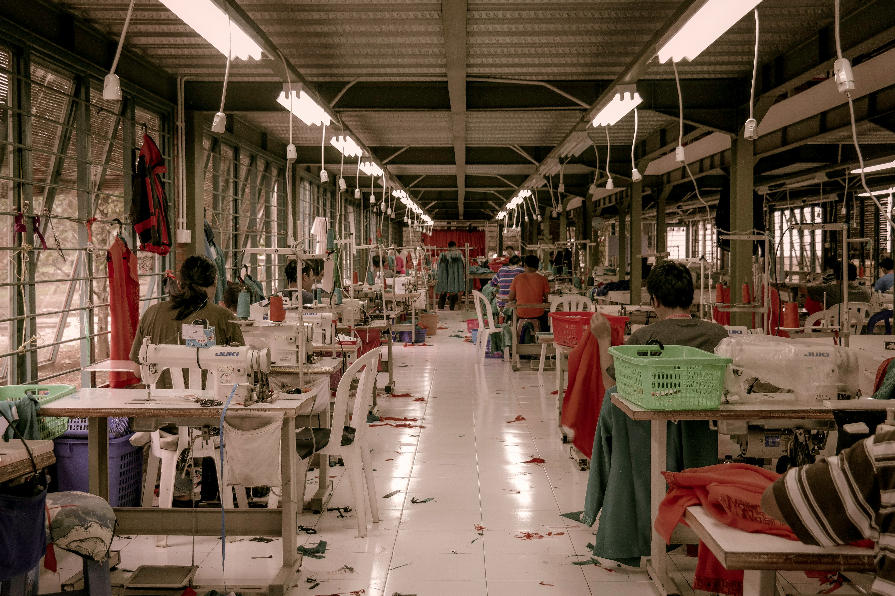
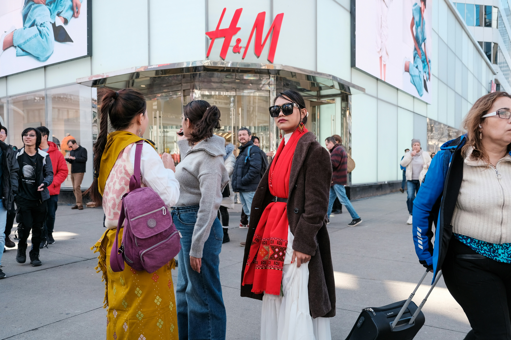
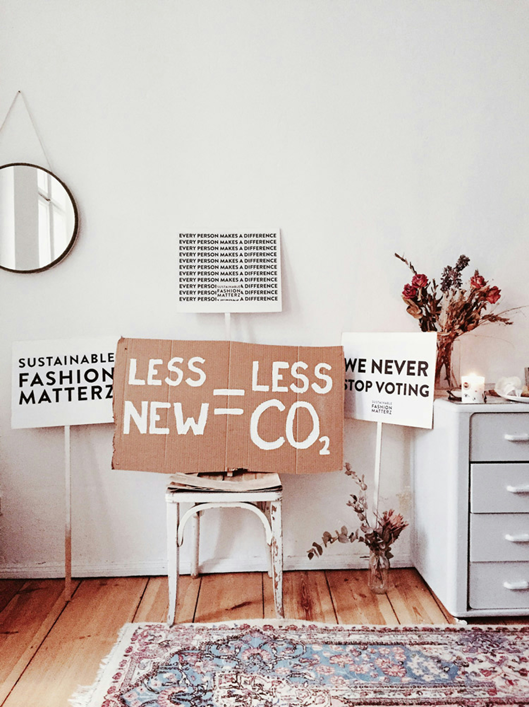

Hidden Costs of the Fast Fashion Industry
Fashion wasn’t always as destructive of an industry. Clothes shopping used to be an occasional event—something that happened a few times a year when the seasons changed or when we outgrew what we had. But about 30 years ago, something changed. Clothes became cheaper, trend cycles sped up, and shopping became a weekly hobby for many. Enter fast fashion and the global chains that now dominate our high streets and online shopping. But what is fast fashion? Why is fast fashion so bad? And how exactly does it impact people, the planet, and animals?
It was all too good to be true in the oughties. All these stores selling cool, trendy clothing well-off people could buy without a second’s thought, wear a handful of times, and then throw away. Suddenly brands were promising that almost everyone could afford to dress like their favourite celebrity and wear the latest trends fresh from the catwalk.
But, of course, someone was paying the price. Then in 2013, much of the world had a reality check when the Rana Plaza clothing manufacturing complex in Bangladesh collapsed, killing over 1,000 workers. That’s when many consumers really started questioning fast fashion and wondering at the true cost of those $5 t-shirts. If you’re reading this article, you might already be aware of fast fashion’s dark side, but it’s worth exploring how the industry got to this point—and how we can help to change it.

Fast fashion can be defined as cheap, trendy clothing that samples ideas from the catwalk or celebrity culture and turns them into garments at breakneck speed to meet consumer demand. The idea is to get the newest styles on the market as fast as possible, so shoppers can snap them up while they are still at the height of their popularity and then, sadly, discard them after a few wears. It plays into the idea that outfit repeating is a fashion faux pas and that if you want to stay relevant, you have to sport the latest looks as they happen. It forms a key part of the toxic system of overproduction and consumption that has made fashion one of the world’s largest polluters. Before we can go about changing it, let’s take a look at the history.
To understand how fast fashion came to be, we need to rewind a bit. Before the 1800s, fashion was slow. You had to source your own materials like wool or leather, prepare them, weave them, and then make the clothes. The Industrial Revolution introduced new technology—like the sewing machine. Clothes became easier, quicker, and cheaper to make. Dressmaking shops emerged to cater to the middle classes. Many of these dressmaking shops used teams of garment workers or home workers. Around this time, sweatshops emerged, along with some familiar safety issues. The first significant garment factory disaster was when a fire broke out in New York’s Triangle Shirtwaist Factory in 1911. It claimed the lives of 146 garment workers, many of whom were young female immigrants.
By the 1960s and ’70s, young people were creating new trends, and clothing became a form of personal expression, but there was still a distinction between high fashion and high street. In the late 1990s and 2000s, low-cost fashion reached a peak. Online shopping took off, and fast fashion retailers like H&M, Zara, and Topshop took over the high street. These brands took the looks and design elements from the top fashion houses and reproduced them quickly and cheaply. With everyone now able to shop for on-trend clothes whenever they wanted, it’s easy to understand how the phenomenon caught on.

Fast fashion’s impact on the planet is immense. The pressure to reduce costs and speed up production time means environmental corners are more likely to be cut. Fast fashion’s negative impact includes its use of cheap, toxic textile dyes—making the fashion industry the one of the largest polluters of clean water globally, right up there with agriculture. That’s why Greenpeace has been pressuring brands to remove dangerous chemicals from their supply chains through its detoxing fashion campaigns through the years.
Cheap textiles also increase fast fashion’s impact. Polyester is one of the most popular fabrics. It is derived from fossil fuels, contributes to global warming, and can shed microfibres that add to the increasing levels of plastic in our oceans when washed or even worn. But even “natural” fabrics can be a problem at the scale fast fashion demands. Conventional cotton requires enormous quantities of water and pesticides in countries like India and China. This results in drought risks and creates extreme stress on water basins and competition for resources between companies and local communities.
However, in recent years there has been a push towards government and industry regulations that would call for fast fashion brands to change their ways or face fines and persecution. In mid-2023, reports Vogue, “the European Union has backed a raft of new regulations to ‘end fast fashion’, including policies designed to make clothes more durable, easier to reuse, repairable and recyclable.” In light of a looming climate catastrophe, industries like fashion that are responsible for such alarming amounts of waste and carbon emissions must be regulated if we are to limit global warming to 1.5°C by the end of this century as outlined by The Paris Agreement in 2015. While these regulations are emerging and still don’t go far enough, critics say, it’s a step in the right direction.
